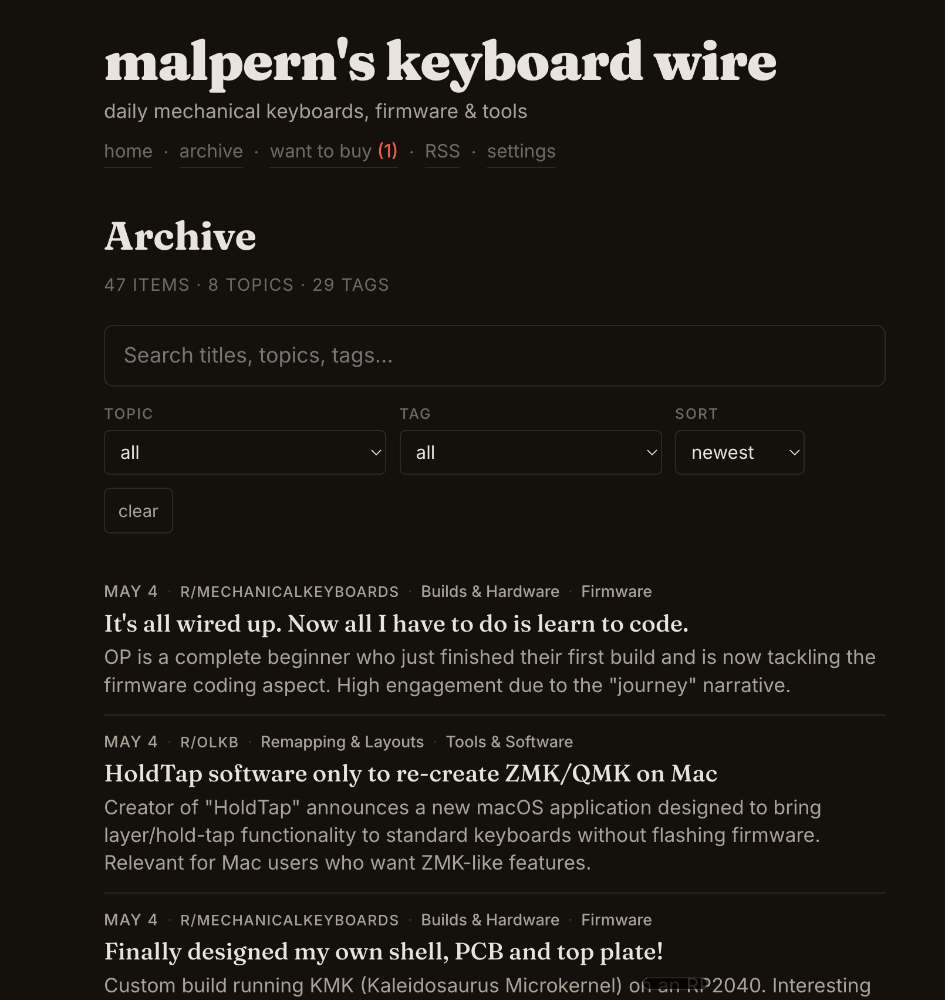
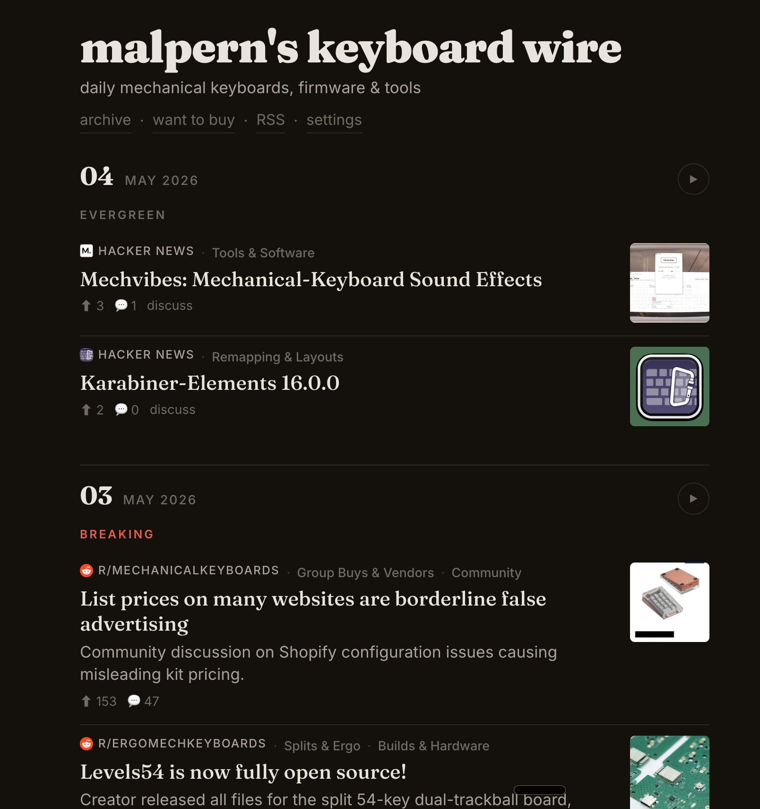

Somewhere between Hacker News, five subreddits, and a dozen vendor newsletters, there's a daily signal about mechanical keyboards — firmware releases, interesting builds, new tools, group buys going live. No single source carries it all. Most carry noise. The interesting question isn't where the news is. It's how you filter it down to the five things worth reading today.
Keyboard Wire is the answer we built: a personal news wire that ingests from multiple sources every morning, classifies each item with a local LLM, rewrites the headlines in Techmeme style, and publishes a static site — all running on a Mac Mini, no API costs, no third-party services touching the data.
This is the story of how it got here: one source at a time, one architectural decision at a time, from a prototype hitting a frontier model to a pipeline that runs entirely on-device.

Section one
The beat
A vertical niche with high signal density, scattered across a dozen sources, and no single feed that captures it all without drowning you in noise.
Mechanical keyboards are a small world with a fast news cycle. Firmware gets released. Group buys open and close. Someone open-sources a PCB design. A new split-ergo concept shows up on Reddit with fifty comments in an hour. If you care about this space — not casually, but as a practitioner — the information exists. It's just nowhere coherent.
Hacker News catches maybe 20% of it. The keyboard subreddits catch another 40%, spread across five communities with overlapping but distinct cultures. Vendor newsletters carry the remaining 40% — product announcements, restock alerts, group buy status updates — but they arrive as marketing emails buried in your inbox.
The model here is Techmeme. Not Techmeme's technology — that's a team, a decade of tuning, millions of sources. The idea of Techmeme: algorithmic curation filtered through editorial taste. What if you could build that for one person, for one niche, running on your desk?
A noisy digest is worse than no digest.
That's the operating principle. The goal isn't comprehensiveness. It's signal density. Five good items are better than twenty mediocre ones. A quiet day — nothing published — is a correct day, not a failure.
The thesis
Pick a niche you know well enough to have taste in. Build a filter, not a firehose.

Section two
One source
Start with a single API, a frontier model, and a question: is this worth reading?
The first version was brutally simple. A cron job that hit the HN Algolia API every morning with about fifteen keyword terms — QMK, ZMK, split keyboard, mechanical keyboard, Kanata, keycap — and fed the results to Claude with a strict classifier prompt.
The prompt's job was binary: for each story, answer INCLUDE or EXCLUDE. The default position was EXCLUDE. Most days, the classifier said no to everything, and that was correct. A keyboard discussion that's actually about a piano? Exclude. A ZMK post that's about zero-knowledge crypto? Exclude. Broad keyword searches return mostly noise — the classifier's entire purpose was to say "no" to the false positives.
# The core loop, day one:
# 1. Fetch candidates from HN
# 2. Ask Claude: is this about mechanical keyboards?
# 3. If yes, format and publish
candidates = fetch_hn_algolia(KEYWORDS)
prompt = build_classifier_prompt(candidates)
response = call_anthropic(prompt) # ~15k tokens/day for HN alone
if response != "NO_REPLY":
items = parse_digest(response)
publish(items)The prototype loop (pseudocode)
It worked immediately. The first morning, two items came through, both genuinely interesting firmware releases. The second morning, nothing — and that was right too. The signal-to-noise ratio was essentially perfect, because the model had enough context to make nuanced judgment calls that keyword matching alone never could.
Where we are
One source, one model, one cron job. The concept works. The taste is right. Now we need more coverage.

Section three
Expanding the wire
Add Reddit's JSON API for five subreddits, then Gmail label parsing for vendor newsletters. Each source needs its own ingestion logic but feeds the same classifier.
Hacker News catches the open-source firmware releases and the "Show HN" posts. It misses everything else. The keyboard community lives on Reddit — build photos, layout discussions, vendor drama, group buy announcements. Five subreddits cover the space: r/MechanicalKeyboards, r/olkb, r/zmk, r/ErgoMechKeyboards, and r/Kanata.
Reddit's JSON API is unauthenticated and returns structured data — title, score, comment count, subreddit, permalink. The ingest script pulls recent posts above a score threshold, formats them into the same shape as HN items, and feeds them through the same classifier prompt. Different source, same question: is this worth reading?
# Reddit items arrive already structured
REDDIT_LINE_RE = re.compile(
r"^(?P<emoji>[...])\s*"
r"\*<?(?P<url>https?://www\.reddit\.com/r/"
r"(?P<subreddit>[^/]+)/comments/(?P<id>[^/]+)"
r"/[^|>*]*)\|(?P<title>[^>*<]+)>?\*\s*"
...
)scripts/parse_digest.py — regex parsing for Reddit items
Newsletters were harder. Vendor emails are semi-structured at best: HTML marketing layouts, tracking pixels, unsubscribe links, the sender's full name in the From field. Before classification could even begin, we needed extraction. What's the subject? What's the primary link? What's the one-sentence summary of what this email is actually announcing?
# Email pipeline: fetch → extract → classify → sanitize
for msg in fetch_labeled_emails("Keyboard", days=1):
if msg.sender in SKIP_SENDERS:
continue
body = extract_body(msg)
result = classify_email(msg.subject, body[:3000])
if result["action"] == "SKIP":
continue
item = {
"title": result["title"],
"takeaway": result["takeaway"],
"primary_url": pick_primary_link(body),
"source": "email",
}scripts/email_pipeline.py — simplified extraction loop
The email pipeline also introduced a privacy concern. Vendor newsletters contain your name, your email address, tracking URLs tied to your account. Publishing those directly to a static site would leak personal information. So we added a sanitization step: strip names, strip tracking pixels, strip unsubscribe links, generate clean landing pages with only the content that matters.
Where we are
Three sources running at staggered cron times. Broad coverage. But ~109k tokens/day hitting a remote API, and every newsletter is passing through a third party.

Section four
Going local
Migrate from a remote frontier model to a local 35B-parameter model running on Ollama. Reduce token cost to zero. Keep data on-device.
Two forces pushed us off the remote model. The first was cost: ~109k input tokens per day, every day, for what amounted to a series of binary classification decisions. The model was excellent at the task — but the task wasn't hard enough to justify the spend. The second was privacy: every vendor newsletter, with its embedded names and tracking links, was being sent to a third-party API for classification. That felt wrong for what should be a personal tool.
The question was whether a local model could match the quality. We ran a backtest: seven days of historical items, classified by both the remote model and a local Qwen 35B running on Ollama. The results:
- 5 days: identical output
- 2 days: marginal differences (one extra item included, or one fewer)
- 0 days: clearly wrong decisions
Good enough. We shipped the migration.
# All scripts now point to localhost
OLLAMA_URL = os.environ.get(
"OLLAMA_URL", "http://localhost:11434/api/generate"
)
MODEL = os.environ.get(
"KW_TAG_MODEL", "qwen3.6:35b-a3b"
)scripts/tag_items.py — the model configuration, entire thing
The migration unlocked something unexpected: because inference was now free, we could add more LLM-powered steps without worrying about cost. Topic tagging, headline rewriting, email content extraction — all tasks that benefit from language understanding but don't require frontier reasoning. Before, each new step was a line item. Now it was just compute time on a machine that was already running.
Inference takes 10–30 seconds per source on a Mac Mini using the 35B model. The entire daily pipeline — all three sources, all enrichment steps — finishes in under two minutes. Cost: the electricity to run it.
Where we are
$0/day inference. Full data sovereignty. And because the model is free, we can now do more with it — not less.

Section five
The three layers
Static Python for what's deterministic. Local LLM for what needs judgment. Small scripts composed in a Unix pipeline.
Not everything needs a model. The pipeline divides cleanly into three kinds of work, and each gets the right tool.
Layer 1: Static Python
Regex parsing, deduplication, HTML generation, RSS rendering, the breaking/evergreen classification (emoji + keyword matching). These are deterministic — given the same input, they produce the same output every time. No model, no inference, no ambiguity.
def classify(emoji: str, title: str) -> str:
if emoji in BREAKING_EMOJI:
return "breaking"
if emoji in EVERGREEN_EMOJI:
return "evergreen"
if BREAKING_KEYWORDS.search(title):
return "breaking"
return "evergreen"scripts/parse_digest.py — no model needed for this decision
Layer 2: Local LLM
Topic tagging ("Is this about firmware, ergonomics, or tooling?"). Headline rewriting ("Is this clickbait? If so, rewrite it in Techmeme style."). Email content extraction ("What is this newsletter announcing?"). These are judgment calls that need language understanding but not frontier reasoning. A 35B model handles them cleanly.
Layer 3: Composition
Each script does one thing. They compose via stdin/stdout, like Unix pipes:
parse_digest.py | tag_items.py | rewrite_titles.py | fetch_images.py | append_day.pyAny script can be run independently, tested in isolation, or replaced. The pipeline is a shell script, not a framework. There's no orchestration layer, no DAG, no scheduler beyond cron. This is intentional — the system is small enough that adding infrastructure would cost more in complexity than it saves in convenience.

Where we are
The right tool for each task. No framework, no orchestration — just cron, shell pipes, and scripts that do one thing each.

Section six
Editorial voice
A news wire isn't just what you include. It's what you exclude, and how you present what survives.
The classifier prompt's most important line is four words: DEFAULT POSITION: EXCLUDE. Most candidate items, on most days, are noise. A Reddit post about a keyboard-themed cake? Exclude. A repost of last week's firmware announcement? Exclude. A vague "what should I buy?" question with no informational content? Exclude. The prompt explicitly biases toward silence.
# From the classifier prompt:
#
# DEFAULT POSITION: EXCLUDE — most days return NO_REPLY.
# Include ONLY items that a keyboard firmware/hardware
# practitioner would find genuinely newsworthy.
#
# False positive examples (EXCLUDE these):
# - "KMK" when it's about Kubernetes (KMK = Kind MK8s)
# - "ZMK" in a zero-knowledge proof context
# - "Karabiner" when discussing macOS but not keyboards
# - Piano/music keyboard contentHeadlines get the same treatment. The rewrite_titles.py script asks the model a two-part question: first, is this headline clickbait, sensational, or vague? If not, leave it alone — many titles are already good. If yes, rewrite it in Techmeme style: lead with the entity, state the action factually, no superlatives, no mystery, no second-person framing.
SYSTEM_PROMPT = """You are a headline editor in the style of Techmeme.
Techmeme rewrites publisher headlines so they read as terse,
factual, detail-rich abstracts. Apply these principles:
1. LEAD WITH THE ENTITY.
2. STATE THE ACTION FACTUALLY.
3. NO SUPERLATIVES.
4. NO SECOND-PERSON / NO RHETORICAL FRAMING.
5. NO MYSTERY.
6. PRESERVE FACTS.
7. CONCISE (<90 chars).
8. NEUTRAL TONE.
"""scripts/rewrite_titles.py — the editorial policy, encoded
The result is a feed that reads like a wire service, not a Reddit front page. Titles are informative at a glance. Items are tagged by topic. The reader — future-me, mostly — can scan five items in thirty seconds and know whether anything happened today.

Where we are
A strict filter, a Techmeme-style rewrite pass, and topic tags. The feed reads like a wire service desk edited it.

Section seven
The next edition
Forum thread summarization, state tracking over time, and the template for building your own wire on any topic.
The natural next source is Geekhack — specifically, its group buy threads. A group buy is a community-organized bulk order for a custom keyboard or keycap set. They have lifecycle states: Interest Check → Group Buy open → closed → in production → shipping → delivered. The status lives in forum threads that span months, buried in pages of comments.
This is a harder problem than link aggregation. You can't just check "is this new?" — you need to track thread state over time, detect when status changes, and condense a 40-page thread into a single current-status summary. It extends the source taxonomy one more step: structured APIs → semi-structured email → unstructured forum threads.
The architecture supports it cleanly. A new ingest script, a new classification prompt, the same downstream pipeline. The local model is already free; the only cost is writing the state-tracking logic.
Pick a niche. Pick a source. Write a classifier prompt. Iterate.
That's the recipe. The pipeline scripts are in the repo. The classifier prompts are the taste layer — the part you swap in for your domain. The plumbing is reusable; the editorial judgment is yours.
Where we are
A working wire service. Zero cost. Full control. And a pattern that generalizes to any niche you care about deeply enough to have taste in.
Roll your own wire
The short version. The repo README has the full setup guide.
- Pick your niche. Something you know well enough to have editorial taste in. If you can't articulate what "noise" looks like for this topic, you're not ready to write a classifier prompt.
- Pick one source. HN Algolia, Reddit JSON, an RSS feed — anything with a free API and structured output. Start with one. Prove the concept.
- Write your classifier prompt. Binary: INCLUDE or EXCLUDE. Default to exclude. Add worked examples of false positives. This is the product — spend time here.
- Prototype with a remote model. Claude, GPT-4, whatever you have access to. Iterate on the prompt conversationally. Don't optimize yet.
- Go local when you're confident. Install Ollama. Pull a capable 30B+ model. Point your scripts at localhost. Backtest a week of historical data to validate.
- Add enrichment now that inference is free. Topic tags, headline rewrites, image fetching. Each step is a small script that reads stdin and writes stdout.
- Publish. Static HTML to GitHub Pages. An RSS feed. Optional Slack delivery. Cron it and walk away.
The code is at github.com/malpern/keyboard-wire. Fork it, swap in your taste, and run your own edition.